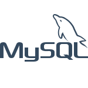
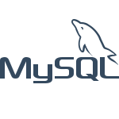
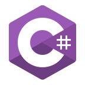
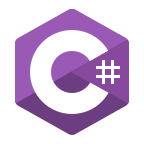

Mi experiencia diseñando páginas web
Me gusta diseñar páginas web que sean adaptables a dispositivos móviles y tablets, manejando técnologías como HTML5, CSS3, SASS y Bootstrap. Desde el 2019 empeze a diseñar páginas web en desarrollo de aplicaciones web
en JAVA y en desarrollo de aplicaciones web en PHP utilizando Bootstrap como framework CSS. Actualmente para el diseño de páginas web utilizo preprocesador SASS para el diseño en CSS3, HTML5 haciendo uso de sus etiquetas semánticas y tambien framework CSS como Bootstrap.
Mi experiencia desarrollando aplicaciones web en Java
He desarrollado aplicaciones web en lenguaje JAVA con tecnologías JSP, Servlet, JDBC, JSTL y servidor de aplicaciones Tomcat. Implementando el Modelo, Vista, Controlador, conexion a base de datos MySQL y desarrollando mantenimiento CRUD en cada proyecto. Fue en el 2019 cuándo empezé a programar en JAVA Web, desde entonces he desarrollado mini proyectos en esta tecnología.
Mi experiencia desarrollando aplicaciones web en PHP
He utilizado PHP en varias ocasiones desarrollando mini proyectos implementando mantenimiento CRUD con el Modelo, Vista, Controlador, conexion a bases de datos MySQL integrando PDO, y manejo de rutas
amigables. Incluyendo Bootstrap para el diseño de las página.
En alguno de mis proyectos he simulado la estructura de framewors PHP para un mejor manejo de la aplicacion.
"Mi experiencia programando es poca, es cierto que aun no he trabajado formalmente en una empresa de desarrollo ó como desarrollador freelance. Pero si me he mantenido desarrollando proyectos, diseñando páginas, aprendiendo nuevas cosas, eso es lo que me hace un eterno autodidacta, nunca parar de aprender."


 


 
